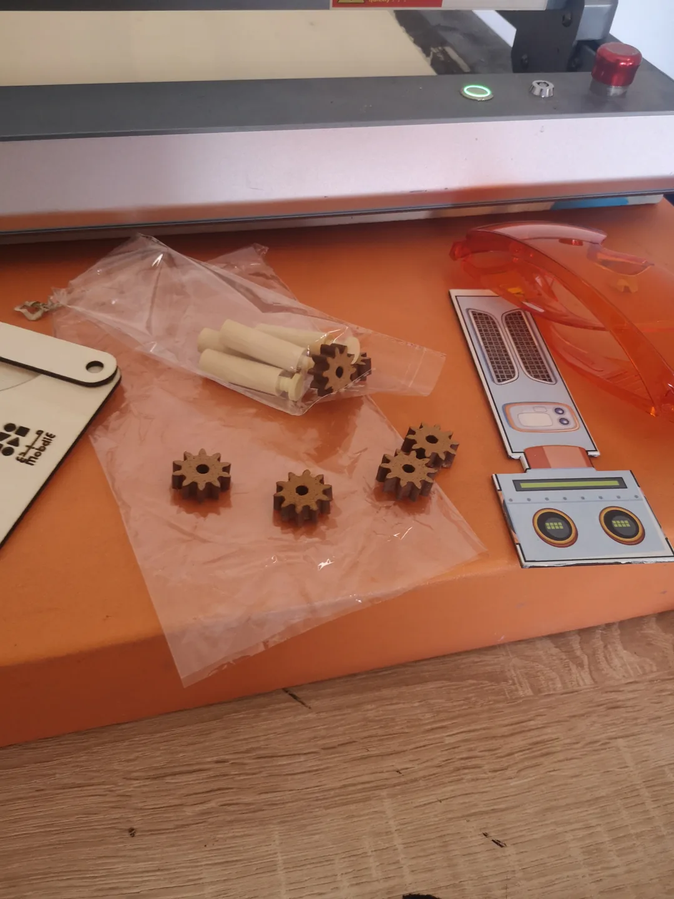
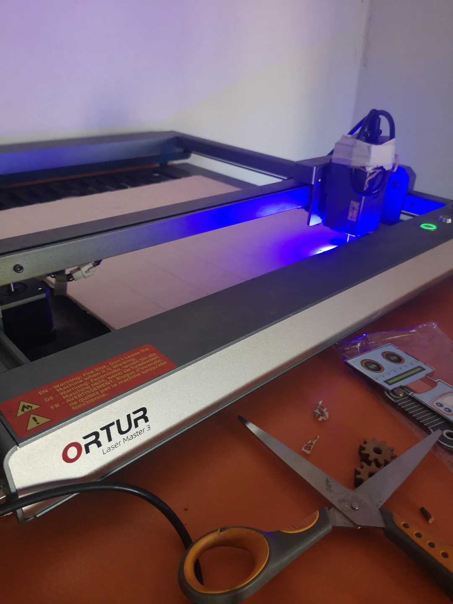
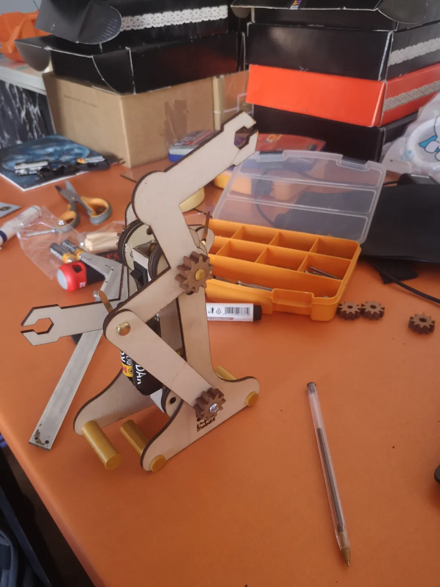
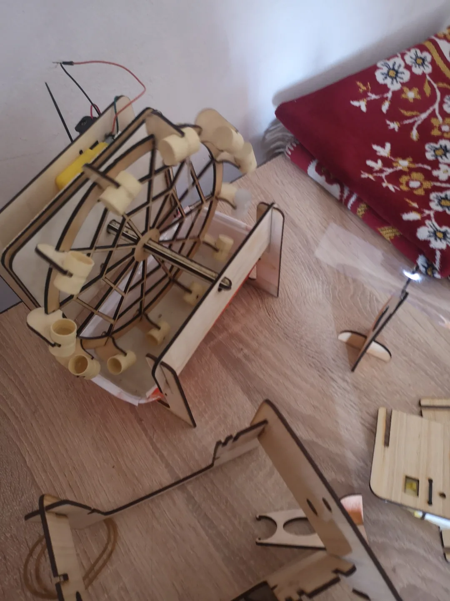

MOBDIE · Freelance product design
Educational Robotics & STEM Kits
Freelance product design
Project overview
For MOBDIE, I designed children’s STEM kits, including an electric walking robot, an electric water wheel and an Arduino project box.
The mechanical ideas had to become parts that could be fabricated and assembled for hands-on activities.

01 / My contribution
From a concept to parts
I developed the concepts and CAD, working through the mechanisms and component interfaces.

02 / My contribution
Preparing for fabrication
I prepared DXF layouts for laser cutting and parts for FDM printing, using Inkscape and Ultimaker Cura alongside Fusion 360.

03 / My contribution
Making the mechanism tangible
I fabricated and assembled functional prototypes to take the kits beyond the digital design.

The result
Parts brought together.
Functional educational prototypes and the CAD and fabrication layouts behind them.
The electric water wheel was another kit developed in the same work, alongside the walking robot and Arduino project box.

Methods & tools
- Fusion 360
- Inkscape
- Laser cutting
- FDM
- Ultimaker Cura